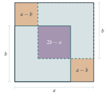

In the following argument to show that \(\sqrt2\) is irrational, give proofs appropriate for steps 3, 5 and 6.
Assume that \(\sqrt2\) is rational.
Define the set \(S\) to be the set of positive integers with the following property: \(n\) is in \(S\) if and only if \(n\sqrt2\) is an integer.
Show that the set \(S\) contains at least one positive integer.
Define the integer \(k\) to be the smallest positive integer in \(S\).
Show that \((\sqrt2 - 1)k\) is in \(S\).
Show that steps 4 and 5 are contradictory and hence that \(\sqrt2\) is irrational.
Prove that \(2^{1/3}\) is rational if and only if \(2^{2/3}\) is rational.
Use an argument similar to that of part (i) to prove that \(2^{1/3}\) and \(2^{2/3}\) are irrational.
The hook
You have probably seen a proof that \(\sqrt2\) is irrational: suppose \(\sqrt2 = a/b\) in lowest terms, square, deduce that \(a\) is even, then that \(b\) is even, contradiction. It is a fine proof. But it relies on a trick about even numbers that doesn’t obviously generalise. What about \(\sqrt[3]{2}\)? Or \(\sqrt{7}\)?
This question offers a different proof, and its central idea is almost absurdly simple: look at the smallest one. The same idea will reappear, in disguise, several times in this chapter.
Before you start
This is an unusual STEP question: it gives you the skeleton of a proof and asks you to fill in the missing justifications. That is exactly how undergraduates learn to read mathematics. A textbook proof often says “clearly” or “it follows that”, and part of your job is to check that it really does.
Step 4 says “define \(k\) to be the smallest positive integer in \(S\)”. Why are we entitled to do that? Would it be allowed if \(S\) were a set of positive real numbers?
Any non-empty set of positive integers has a smallest element. This is called the well-ordering principle, and it is equivalent to the principle of mathematical induction. It is false for sets of positive reals: the set \(\{x : x > 0\}\) has no smallest element. So step 4 relies on step 3 (the set must be non-empty) and on \(S\) consisting of integers.
Working it through
Stage 1 Step 3: \(S\) is not empty
If \(\sqrt2 = a/b\) for positive integers \(a\) and \(b\), can you write down an element of \(S\)?
If \(\sqrt2 = a/b\), then \(b\sqrt2 = a\), which is an integer. So \(b\) is in \(S\), and \(S\) is not empty.
Stage 2 Step 5: a smaller element
Now \(k\) is the smallest element of \(S\), so \(k\sqrt2\) is an integer; call it \(j\).
To show that \((\sqrt2 - 1)k\) belongs to \(S\) you must check three things. What are they?
We need \((\sqrt2-1)k\) to be (a) an integer, (b) positive, and (c) such that multiplying it by \(\sqrt2\) gives an integer.
(a) \((\sqrt2 - 1)k = k\sqrt2 - k = j - k\), a difference of integers.
(b) \(\sqrt2 > 1\), so \(\sqrt2 - 1 > 0\) and hence \((\sqrt2-1)k > 0\).
(c) \((\sqrt2-1)k \cdot \sqrt2 = 2k - k\sqrt2 = 2k - j\), an integer.
So \((\sqrt2 - 1)k \in S\).
Stage 3 Step 6: the contradiction
How big is \(\sqrt2 - 1\)?
Since \(1 < \sqrt2 < 2\), we have \(0 < \sqrt2 - 1 < 1\), and so \((\sqrt2 - 1)k < k\). We have found an element of \(S\) smaller than \(k\), the smallest element of \(S\). That is impossible, so our assumption in step 1 was false: \(\sqrt2\) is irrational.■
Notice that we never needed “lowest terms” or any facts about even and odd numbers. The whole proof rests on three facts: \(\sqrt2 \cdot \sqrt2\) is an integer, \(\sqrt2\) lies strictly between two consecutive integers, and integers have a well-ordering.
Stage 4 Cube roots: linking the two numbers
Write \(c = 2^{1/3}\), so that \(c^2 = 2^{2/3}\) and \(c^3 = 2\).
If \(c\) is rational, is \(c^2\)? And if \(c^2\) is rational, can you get back to \(c\) using only multiplication and division?
If \(c\) is rational then so is \(c^2 = c \times c\). Conversely, if \(c^2\) is rational then so is \(2 / c^2 = c^3 / c^2 = c\). So \(2^{1/3}\) is rational if and only if \(2^{2/3}\) is.■
Stage 5 Adapting the argument
In part (i), the key was that \((\sqrt2)^2 = 2\) is an integer, so multiplying an element of \(S\) by \(\sqrt2\) twice takes you back to integers. For \(c = 2^{1/3}\) you would need to multiply three times. How should the set \(S\) change?
Suppose \(c\) is rational; then \(c^2\) is too. Define \[S = \{ n \text{ a positive integer} : nc \text{ and } nc^2 \text{ are both integers} \}.\]
\(S\) is not empty. If \(c = a/b\) and \(c^2 = a'/b'\), then \(bb'\) is in \(S\).
Let \(k\) be its smallest element, and consider \((c - 1)k\). We have \(1 < c < 2\) (since \(1^3 < 2 < 2^3\)), so \(0 < (c-1)k < k\).
It is an integer: \((c-1)k = kc - k\).
Times \(c\): \((c-1)k \cdot c = kc^2 - kc\), an integer.
Times \(c^2\): \((c-1)k \cdot c^2 = kc^3 - kc^2 = 2k - kc^2\), an integer.
So \((c-1)k \in S\) and is smaller than \(k\): contradiction. Hence \(2^{1/3}\) is irrational, and so, by Stage 4, is \(2^{2/3}\).■
Looking back
“Take the smallest one” is a proof technique. Assume a counterexample exists, take the smallest, and manufacture a smaller one. This is called the extremal principle, or a minimal counterexample argument.
The set \(S\) did the bookkeeping. Instead of juggling numerators and denominators, we collected all the “good” multipliers into one set.
Generalising meant asking what really made the proof work. For \(\sqrt2\) one multiplication by \(\sqrt2\) was needed; for \(\sqrt[3]{2}\) we needed two. Spotting that told us exactly how to redefine \(S\).
What’s really going on
There is a lovely picture behind part (i), due to Stanley Tennenbaum. If \(\sqrt2 = a/b\) then \(a^2 = 2b^2\): a square of side \(a\) has the same area as two squares of side \(b\). Place the two \(b\)-squares in opposite corners of the \(a\)-square, as in Figure 1.3.1. They overlap in a small square, and leave two small squares uncovered. Equal areas force the overlap to equal the two uncovered squares together, giving a smaller pair of integers with the same property. Smaller and smaller pairs can’t go on for ever, so no such squares exist. The smaller pair is exactly \((2b - a,\; a - b)\), which is our \((\sqrt2 - 1)k\) step in disguise.

Well-ordering, induction and descent
The well-ordering principle and the principle of induction are logically equivalent: each can be proved from the other. At university you will see both used as the foundations of the natural numbers. In Section 1.5 we will use the same principle in a different form, Fermat’s method of infinite descent: there is no infinite strictly decreasing sequence of positive integers.
How far does it go?
The argument proves that \(\sqrt N\) is irrational whenever \(N\) is not a perfect square (see the exercises), and more generally that the \(n\)th root of a whole number is either a whole number or irrational. At university this becomes a statement about algebraic integers: a rational number that satisfies a monic polynomial equation with integer coefficients, such as \(x^3 - 2 = 0\), must be an integer. You will meet the idea again in Section 6.3.
The legend that the Pythagoreans drowned Hippasus for revealing the irrationality of \(\sqrt2\) is probably untrue. What is true is that the discovery forced Greek mathematicians to separate the study of number from the study of length, a split that took until the nineteenth century, and Dedekind’s construction of the real numbers, to heal.
The thinking skill
If you want to show that something never happens, suppose it does, choose the smallest (or largest, or simplest) instance, and use it to build an even smaller one.
The choice of what “smallest” means is the creative step. Here it was the smallest \(n\) making \(n\sqrt2\) an integer.
Try this next
Other square roots. Adapt the argument to show that \(\sqrt3\) is irrational. Which number plays the role of \(\sqrt2 - 1\)?
All non-squares. Let \(N\) be a positive integer that is not a perfect square, and let \(m\) be the integer with \(m < \sqrt N < m+1\). Prove that \(\sqrt N\) is irrational by considering \((\sqrt N - m)k\).
Spot the flaw. Try to run the argument for \(\sqrt 4\). Exactly which step fails?
Tennenbaum’s picture. Use Figure 1.3.1 to show that if \(a^2 = 2b^2\) then \((2b-a)^2 = 2(a-b)^2\). Check this identity algebraically too.
Further reading
Daniel Velleman, How to Prove It (Cambridge University Press). A thorough introduction to proof, including induction and well-ordering.
R. P. Burn, A Pathway into Number Theory (Cambridge University Press). A book made entirely of carefully sequenced questions; ideal preparation for a first-year course.
John Conway & Joseph Shipman, “Extreme proofs I: the irrationality of \(\sqrt2\)” (Mathematical Intelligencer, 2013). Many proofs of one fact, compared with wit.